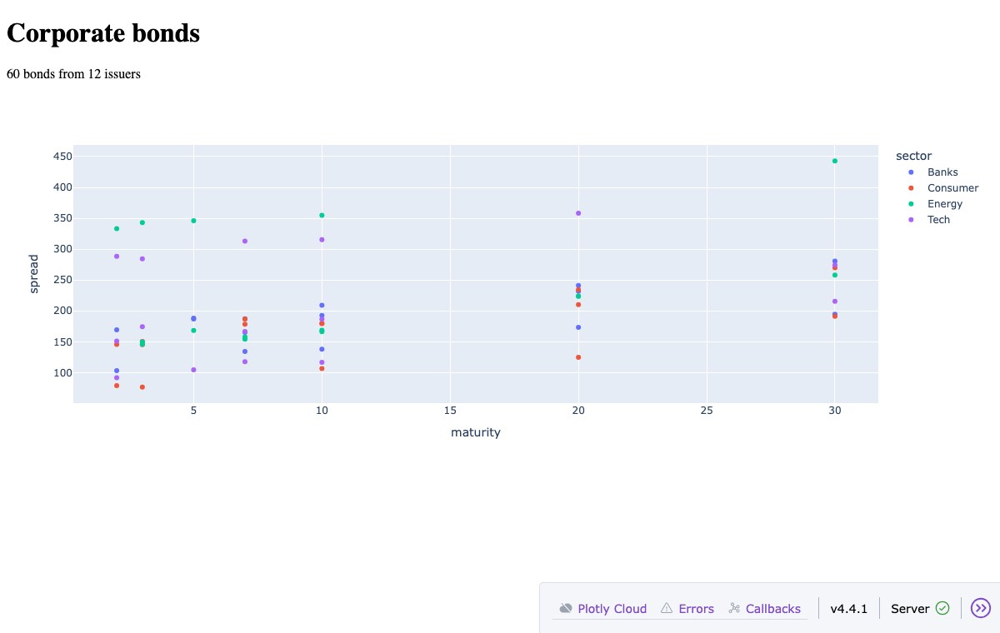
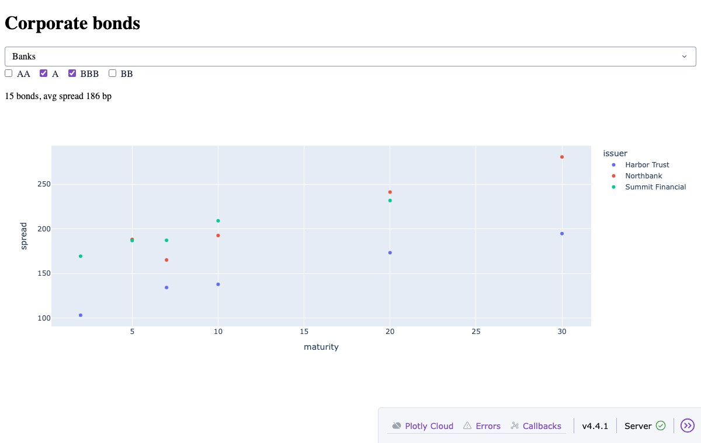
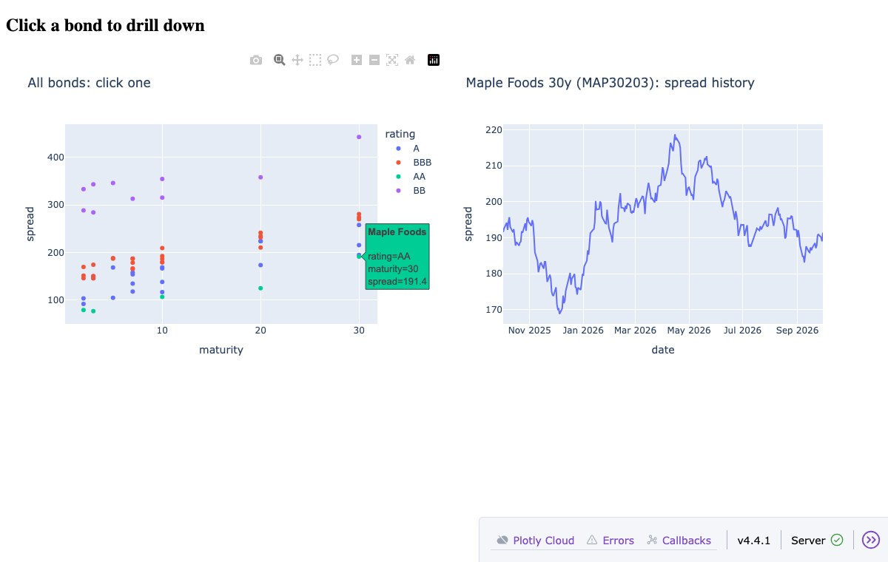

From a Plotly chart to an interactive app, and what happens behind the scenes
Demos: demos/ in this repo · start them all with python demos/run_all.py
import plotly.express as px
from data import bonds
fig = px.scatter(bonds, x="maturity", y="spread",
color="sector", hover_name="issuer")
fig.write_html("plotly_only.html")
from dash import Dash, html, dcc
import plotly.express as px
from data import bonds
app = Dash(__name__)
fig = px.scatter(bonds, x="maturity", y="spread", color="sector")
app.layout = html.Div([
html.H1("Corporate bonds"),
html.P(f"{len(bonds)} bonds"),
dcc.Graph(id="chart", figure=fig), # id: find it later
])
if __name__ == "__main__":
app.run(debug=True) # http://127.0.0.1:8050
id lets the app find a component later, to read it or update it.
demos/02_hello_dash.pydcc.Graph shows any Plotly chart: the same code you'd write in a notebook.
dcc.Graph(
id="chart",
figure=px.line(df, x="date",
y="spread"),
)
A chart also tells the app what the user does to it.
Later we'll show how to use clickData to drill into another chart.
dash-ag-grid (sortable, filterable tables) ·
dash-bootstrap-components and dash-mantine-components (themes, layouts, more widgets)app.layout = html.Div([
html.H1("Corporate bonds"),
dcc.Dropdown(sectors, "Banks", id="sector"),
dcc.Checklist(ratings, ["A", "BBB"], id="rating"),
html.P(id="summary"),
dcc.Graph(id="chart"),
])
@callback(Output("summary", "children"),
Output("chart", "figure"),
Input("sector", "value"),
Input("rating", "value"))
def update(sector, ratings):
d = bonds[(bonds.sector == sector)
& bonds.rating.isin(ratings)]
text = f"{len(d)} bonds, avg {d.spread.mean():.0f} bp"
fig = px.scatter(d, x="maturity", y="spread")
return text, fig
Input arrives as the first argument (sector),
the second as the second (ratings).Output,
fig the second.
overview = px.scatter(bonds, x="maturity", y="spread",
color="rating", hover_name="issuer",
custom_data=["cusip"]) # rides along with each point
app.layout = html.Div([
dcc.Graph(id="overview", figure=overview),
dcc.Graph(id="detail"),
])
@callback(Output("detail", "figure"),
Input("overview", "clickData"))
def show_history(click):
if click is None: # page load: nothing clicked
cusip = bonds.cusip.iloc[0]
else:
cusip = click["points"][0]["customdata"][0]
h = history[history.cusip == cusip]
return px.line(h, x="date", y="spread", title=cusip)

demos/05_drilldown.pyDescribe what you want: at a high level, or in more detail if you know the details.
Build a Dash app for the bonds data: filter by sector, show spread vs maturity, and let me click a bond to see its history.
Add a sector dropdown (id sector, default Banks). When it changes,
filter the scatter and show the count and average spread under it. When I click a point, use
custom_data to get the cusip and plot its history from history in a second chart.
Switching to the dashboard now. Things to look for:
assets/ folder are picked up
automatically, and component libraries such as Dash Bootstrap or Dash Mantine add themes and ready-made layouts.| tool | best fit | front-end model | server |
|---|---|---|---|
| Dash | production dashboards and apps with clear interactivity; Plotly charts | the page is described in Python; the browser holds widget values and asks the server when an input changes | Python web server; each request is answered on its own, with no per-user memory |
| Streamlit | quick internal tools; turning a data script into an app fast | the whole script re-runs top to bottom on every interaction; widgets simply return values | Python server with a live connection per user; per-user state in st.session_state |
| Panel / Bokeh | notebook-to-app; scientific or large data; mixing plotting libraries | Python objects kept in sync with their browser copies; reactive functions | Bokeh server with a live connection per user; can also run inside Jupyter |
| Jupyter widgets | interactive exploration inside a notebook | widgets in the notebook, kept in sync with Python objects | the notebook's Python kernel; Voilà turns a notebook into a shareable page |
| Shiny for Python | apps with many linked inputs and outputs | reactive: outputs re-compute automatically when the inputs they use change | Python server with a live connection per user |
| Gradio | demos of ML models: inputs in, prediction out | a function wrapped in ready-made input and output components | Python server; easy to share or host on Hugging Face |